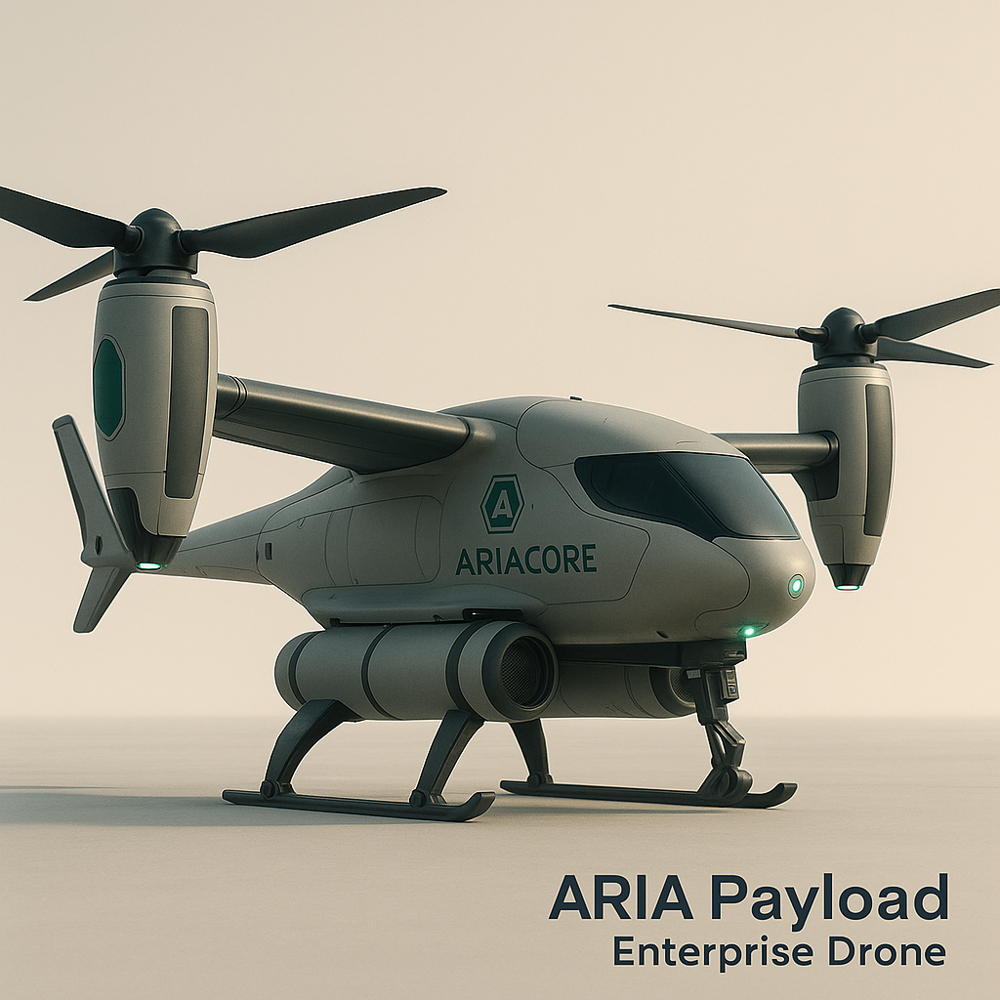
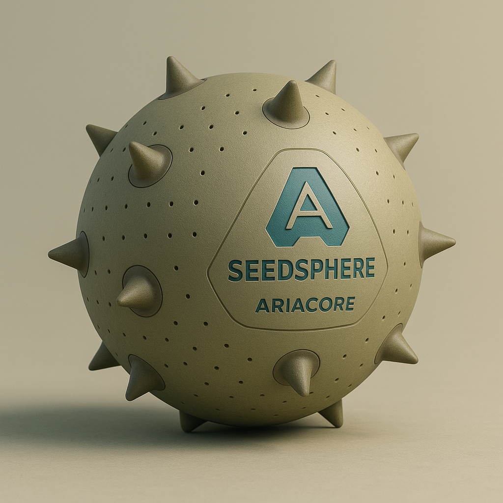

Autonomous, scalable robotics designed to heal the planet—one mission at a time.
AriaOS is the neural architecture that powers every AriaCore system. A resilient multi-node AI designed for real-world robotics, environmental missions, and large-scale autonomy. AriaOS coordinates drones, SeedSpheres, and future Mach-series humanoids into a unified ecological restoration network.

Our autonomous VTOL platforms deploy seeds, survey terrain, map ecosystems, and restore wildfire-damaged landscapes. Heavy-lift and high-resolution survey variants work together under AriaOS to achieve rapid, scalable reforestation. A percentage of proceeds from all services is reinvested directly into AriaCore’s environmental recovery programs.
Explore Enterprise Class
SeedSphere and AquaSphere modules roll across terrain, aerating soil, distributing thousands of native seeds, and strengthening the foundation of new forests. Deployed and collected autonomously, they accelerate ecosystem recovery. All system sales and services contribute to advancing AriaCore’s reforestation mission.
Explore SeedSphere Systems
From the rugged Mach-1 salvage platform to the refined Mach-2 and armored Mach-3, AriaCore’s humanoid series represents the future of field robotics, disaster recovery, and high-end autonomous infrastructure support.
Explore Series RobotsYour support helps us rebuild forests, restore ecosystems, and develop technologies that protect Earth for generations.
Support AriaCore